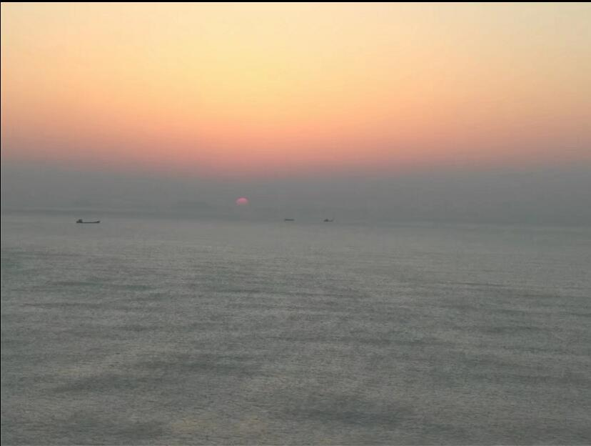
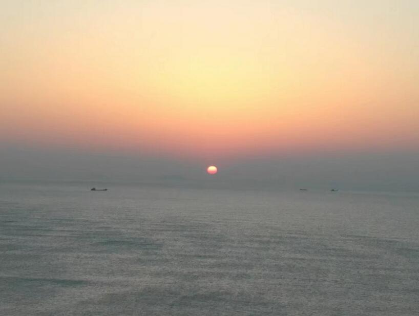
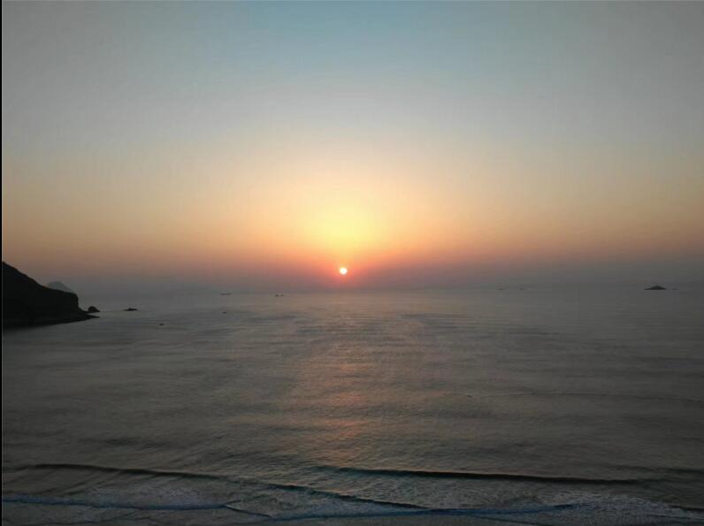
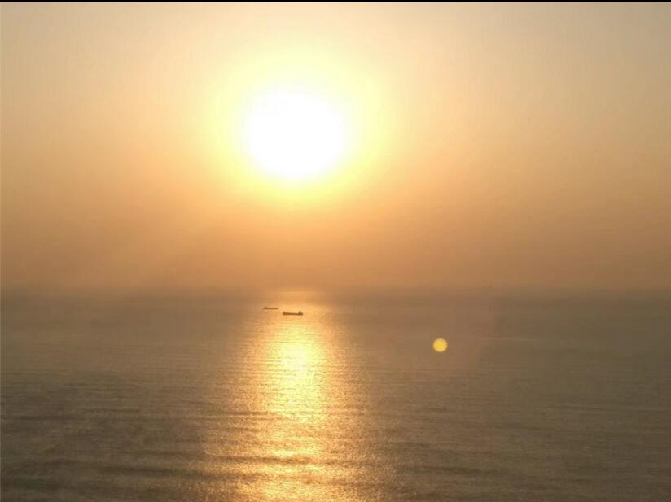
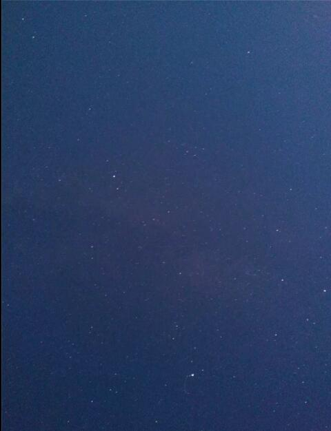

昨晚通宵了
本来打算出发前补觉的，刚刚躺床上睡觉，姐上一个电话把我炸起来，说，她闺蜜那几个看完电影了，然后找我们吃活该，吃完两点多了，然后直接出发……三点下高速，四点到温岭洞下沙滩……果然蓝蓝的海水就是骗人的啊，浙江哪有蓝蓝的海水，卫星地图上，近海整个都是黄的！回家后我姐问大堂姐，她回答，她去的那次的图片，果然是P图的。
昨晚就没有睡觉，脑子涨涨的，就算白天补了一觉，还是感觉有点涨。
上传几张今天的照片吧，显然咱又犯懒了，不打算更新
日出系列
拍的像是夕阳的样子
手机高曝光拍出来得到，虽然有单反，但是自觉功力不足，没有带过去，拍照的时候深感，单反不带没什么，但是我应该带上三脚架才对！